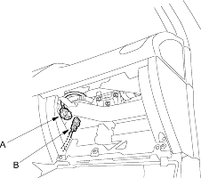
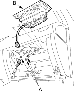

- Disconnect the battery negative cable and wait at least 3 minutes before beginning work.
- Remove the glove box (see page 20-79).
- Disconnect the connector between the front passenger's airbag 2P connector (A) and dashboard wire harness B 2P connector (B).

- Remove the three mounting nuts (A) from the bracket. Cover the lid and dashboard with a cloth, and pry carefully with a screwdriver to lift the front passenger's airbag (B) out of the dashboard.
NOTE: The airbag lid has pawls on its side which attach it to the dashboard.
